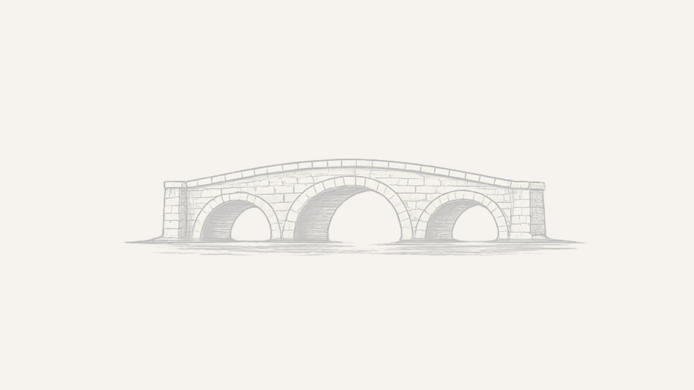

For Existing Clients
Complete forms and review documents
Access billing information and portal messages
Join telehealth sessions through the secure portal experience
Stonebridge uses a secure external portal for forms, documents, messaging, billing, and telehealth access. Existing clients can use the portal below. New clients should begin with a consultation request.
